Упражнение 4 Создание социально-экономической карты
Архив с данными и файлом отчёта
4.1 Введение
Цель задания — закрепление навыков загрузки и визуализации данных в QGIS.
Необходимая теоретическая подготовка: модели пространственных данных, модели пространственных объектов, базы пространственных объектов, картографические проекции.
Необходимая практическая подготовка: в объёме упражнения 1.
Исходные данные: база пространственных данных на территорию Российской Федерации
Ожидаемый результат: тематическая карта «Население России» масштаба 1:35 000 000
В этом упражнении вы закрепите базовые навыки визуализации с использованием программных средств ГИС, составив карту населения Российской Федерации в разрезе субъектов фередации и крупных населённых пунктов. На картах населения, как правило, изображается людность городов (способом значков) и плотность населения (способом количественного фона). В рамках упражнения мы не будем пытаться выполнить «объективное» районирование территории по естественным градациям плотности населения; вместо этого воспользуемся обобщённой статистикой по плотности населения субъектов РФ.
4.1.1 Контольный лист
- Добавить на карту источники пространственных данных
- Импортировать символику
- Настроить подписи объектов
- Создать набор пространственных данных из текстового файла
- Создать компоновку карты и легенду
- Экспортировать результат в графический файл
4.2 Начало работы
Скачайте архив с исходными данными для упражнения и распакуйте его в свою рабочую директорию.
Запустите QGIS. Нажмите кнопку Сохранить и сохраните проект QGIS (файл формата
.qgz) в распакованную папку (Ex03_PopulationMap) под именемEx03_%Фамилия%. Папка Ex03_PopulationMap теперь является расположением по умолчанию для проекта.Откройте Менеджер источников данных, на вкладке Браузер найдите и разверните Размещение по умолчанию для проекта. Вы видите там файл проекта, который вы только что сохранили, и базу данных
RussiaPopulationMap.gpkg.Разверните содержимое базы
RussiaPopulationMap.gpkg.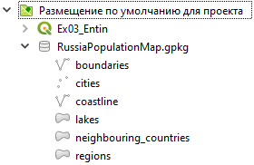
Файл формата GeoPackage (*.gpkg) представляет собой базу данных SQLite, внутри которой содержатся таблицы с данными и таблицы с метаданными. В отличие от шейп-файлов, GeoPackage хранит всю необходимую информацию в одном файле. Это позиционируется как одно из главных преимуществ формата.
Один файл формата GeoPackage может хранить один или несколько наборов пространственных данных. В терминологии разработчиков формата разные наборы данных внутри базы называются слоями (layers) или таблицами данных (data tables). В браузере менеджера источников данных они отображаются с использованием разных значков в зависимости от типа геометрии:
 точки;
точки; линии;
линии; полигоны.
полигоны.
Как и в случае с шейп-файлами, один набор данных может содержать объекты только одного типа геометрии.
Добавьте на карту все наборы из базы
RussiaPopulationMap.gpkg. Для добавления набора дважды щёлкните по его названию левой кнопкой мыши.В панели Слои основного окна QGIS расположите слои в следующем порядке:
- cities (города)
- coastline (береговая линия)
- boundaries (государственные границы)
- lakes (озера)
- regions (регионы РФ)
- neighbouring countries (соседние страны)
Используя кнопку
 Полный охват или комбинацию клавиш
Полный охват или комбинацию клавиш Ctrl+Shift+F, измените охват изображения, чтобы во фрейме карты отобразились все объекты из добавленных слоёв.
Как видите, изображение выглядит немного странно и мало похоже на карту России. Поскольку Чукотский автономный округ расположен одновременно в западном и восточном полушариях, его изображение разрывается, если в проекте используется географическая система координат (что соответствует цилиндрической равнопромежуточной по меридианам проекции). Для карт России обычно применяются конические проекции, причём многих из них нет в международных базах данных. На следующем шаге мы выберем для карты подходящую проекцию и систему координат.
4.3 Изменение системы координат проекта
Откройте Свойства проекта, а в них — вкладку Система координат
Это можно сделать одним из следующих способов: из меню Проект — Свойства…, при помощи сочетания клавиш
Ctrl+Shift+Pили нажатием на надписьEPSG:4326в правом нижнем углу окна QGIS. Рекомендуем пользоваться последним способом, поскольку он сразу открывает нужную вкладку.В строке поиска введите
Asia_North, чтобы отфильтровать список доступных систем координат. Теперь в списке предустановленных систем координат (Predefined coordinate systems) отображаются только системы координат, название которых включает символыAsia_North.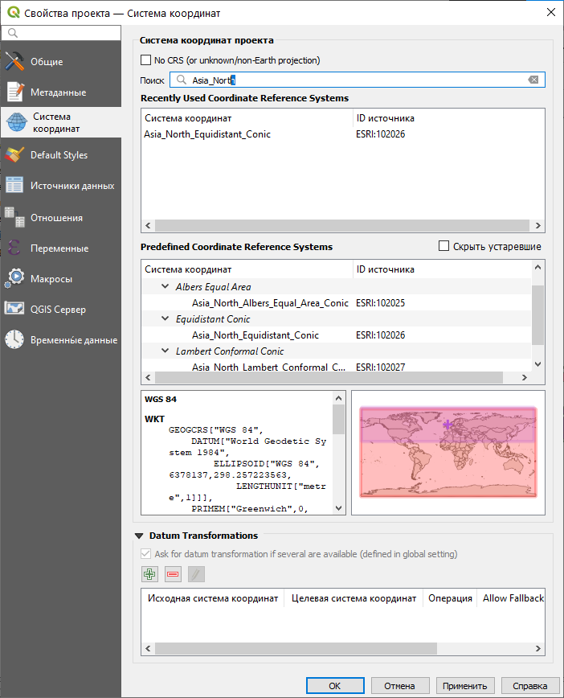
Выберите из списка систему координат в конической равновеликой проекции (Equal Area Conic).
Нажмите ОК.
Установите масштаб карты равным 1:35 000 000.
Снимок экрана №1. Окно QGIS после изменения системы координат проекта
- Сохраните проект QGIS. Запишите файл проекта (
*.qgz) в папку с исходными данными и назовите его по шаблонуEx03_%Фамилия%.
Примечание: в дальнейшем мы не будем напоминать вам о необходимости сохранять
4.4 Создание картограмм
Для отображения относительных показателей по единицам административно-территориального деления используется способ изображения, который в русской картографической традиции называется картограммой. Картограмму очень просто сделать в ГИС, если у вас есть набор пространственных данных, пригодный для картографирования.
Откройте таблицу атрибутов слоя regions. Найдите в этой таблице поле
population_density. Это поле таблицы хранит значения плотности населения по субъектам РФ.
Закройте таблицу атрибутов. Откройте свойства слоя regions и перейдите на вкладку Стиль.
В верхней части окна выберите из выпадающего списка метод визуализации Градуированный знак
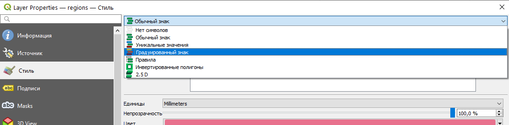
Во втором поле выберите столбец таблицы атрибутов, значения которого будут использованы для создания визуализации. Вам нужно выбрать из выпадающего списка поле, хранящее информцию о значениях плотности населения.

Значения, взятые из выбранного поля, будут классифицированы, то есть разделены на диапазоны, с использованием одного из доступных в QGIS метода классификации. Каждому диапазону сопоставляется уникальный условный знак. Все пространственные объекты, значения выбранного атрибута которых попадают в один и тот же диапазон, будут изображены на карте с использованием этого условного знака. Метод визуализации Градуированный знак предполагает, что условные знаки будут отличаться цветом фона, и эти цвета определяются на основе заданного градиента цветов.
Нажмите правой кнопкой мыши на содержимое параметра Градиент. В открывшемся меню перейдите к пункту Все градиенты и выберите градиент Oranges
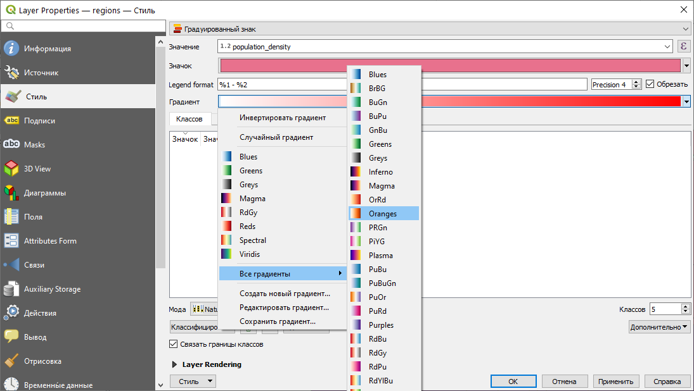
После всех применённых настроек блок классов (Classes) остаётся пустым. Чтобы классифицировать имеющееся множество значений, нажмите кнопку Классифицировать. Классификация будет выполнена с использованием метода естественных разрывов (Natural Breaks), который используется в QGIS по умолчанию.
Нажмите ОК, чтобы применить изменения и закрыть окно свойств слоя. Изображение должно принять вид, аналогичный рисунку ниже.

Существует множество методов классификаций: равных интервалов, квантилей, стандартных отклонений и т.д. По умолчанию в большинстве геоинформационных продуктов используется метод естественных интервалов: считается, что он в среднем неплохо отражает особенности распределения. Следует знать, однако, что этот метод классификации плохо справляется с распределениями, обладающими значительной асимметрией и эксцессом (heavy-tail distribution). Кроме того, интервалы, генерируемые этим методом, не обладают свойством наглядности. На следующем шаге мы отредактируем применяемую классификацию.
Снова откройте окно свойств слоя на вкладке Стиль. Проверьте, что опция Связать границы классов (ниже кнопки Классифицировать) включена.
Используя поле ввода в правой части окна, измените число классов на 7.

Теперь мы отредактируем вручную границы классов. Дважды щёлкните левой кнопкой мыши по значениям первого класса в списке. Откроется окно редактирования границ классов
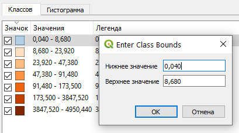
Введение следующие параметры:
- нижнее значение: 0
- верхнее значение: 1
Нажмите ОК в окне редактирования границ классов. Вы выделили в отдельный класс регионы РФ со средней плотностью менее 1 человека на квадратный километр. Обратите внимание, что нижняя граница следующего класса тоже изменилась. Это произошло потому, что исполььзуется опция Связать границы классов. Это ускорит для вас процесс редактирования границ других классов
Измените границы следующих классов в соответствии со следующим списком:
- 1 – 5;
- 5 – 10;
- 10 – 20;
- 20 – 50;
- 50 – 100;
- 100 – 5000
Нажмите OK, чтобы применить новые настройки и закрыть окно свойств слоя.
Снимок экрана №2. Окно QGIS после настройки визуализации слоя регионов РФ
Вы настроили визуализацию слоя, но прежде чем переходить к другим слоям, необходимо сделать ряд косметических изменений. Начните с переименования слоя. В таблице слоёв щёлкните правой кнопкой мыши по названию слоя regions, выберите пункт меню Переименовать и введите для слоя новое название: Плотность населения, чел/км².
Теперь измените отображение некоторых классов в легенде. Снова откройте свойства слоя на вкладке Стиль. В таблице классов в колонке Легенда отображаются названия классов в таком виде, в котором они будут показаны в легенде. Дважды щёлкните на подписи легенды класса «0 – 1». Введите вручную новую подпись для легенды: менее 1.
Аналогичным образом измените запись в легенде для класса «100 – 5000»: более 100.
Примените изменения и закройте окно свойств слоя.
Зажимая левой кнопкой мыши и перетаскивая записи в таблице, измените их порядок так, чтобы они были отсортированы по убыванию:
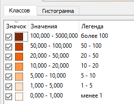
Вы закончили настраивать отображение слоя картограммы и можете перейти к настройке следующего слоя.
4.5 Создание шкалы значков
Плотность населения на картах обычно отображается с помощью шкалы значков. Вы создадите такую шкалу, используя положения населённых пунктов и данные из таблицы атрибутов соответствующего набора данных.
Откройте таблицу атрибутов слоя cities. Найдите в этой таблице поле
population_2020. Это поле таблицы хранит значения численности населения по городам РФ (в тысячах человек).Закройте таблицу атрибутов. Откройте свойства слоя cities и перейдите на вкладку Стиль.
В верхней части окна выберите из выпадающего списка метод визуализации Градуированный знак
Во втором поле выберите столбец таблицы атрибутов, значения которого будут использованы для создания визуализации. Вам нужно выбрать из выпадающего списка поле, хранящее информцию о значениях численности населения.
Нажмите на кнопку Значок. В открывшемся меню выберите новый символ для значка — Dot Purple

В поле Метод поменяйте вариант Цвет на вариант Размер. Для отображения различных классов будут использоваться значки разных размеров.
Настройки поля Размер (Size from … to …) служат для изменения размера значков. Оставьте значения, предложенные QGIS по умолчанию.
Нажмите кнопку Классифицировать. В списке классов появится пять записей.
Измените границы классов в соответствии со следующим списком:
- 100 – 200;
- 200 – 500;
- 500 – 1000;
- 1000 – 5000;
- 5000 – 15000;
Переименуйте элемент легенды, соответствующей классу с самыми большими значениями. Установите новую подпись более 5000
Измените порядок строк в таблице таким образом, чтобы значения располагались по убыванию (аналогично тому, как вы делали для легенды картограммы)
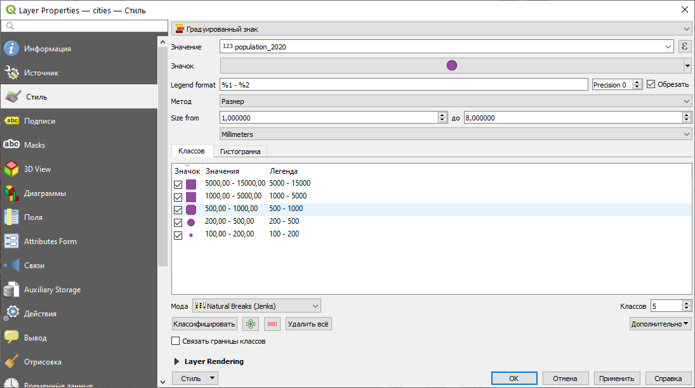
Примените изменения и закройте окно свойств слоя.
Переименуйте слой cities. Задайте этому слою имя Людность городов, тыс. чел.
Результат будет выглядеть приблизительно так, как показано на рисунке:

Снимок экрана №3. Окно QGIS после настройки визуализации слоя населённых пунктов РФ
4.6 Добавление подписей значков
Откройте свойства слоя cities, вкладку Подписи. Эта вкладка используется для настройки подписей и содержит ряд вложенных вкладок, позволяющих настраивать параметры размещения и отображения подписей. Прямо сейчас все вложенные опции отключены, поскольку используется режим Не показывать подписи (No labels).
В выпадающем списке в верхней части окна измените No labels (Не показывать подписи) на Single labels (Подписи по значениям одного поля). Сразу после изменения этой настройки на вкладке откроется множество других параметров.
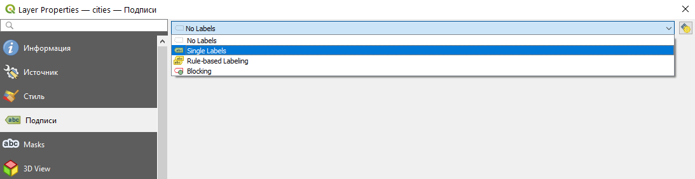
В опции Значение выберите поле, из которого будут взяты тексты подписей. Это поле name_map
На вкладке Текст измените размер на 7.

«Размер текста» в QGIS — это кегль, или высота шрифта. Традиционно она измеряется в типографских пунктах (пт, pt), так же, как в текстовых редакторах типа Microsoft Word.
Перейдите на вкладку «Буфер». Включите опцию Показывать текстовый буфер (Draw text buffer). Установите для буфера размер 0,6 миллиметра.

На вкладке Размещение установите способ размещения значков Картографический (Cartographic) и расстояние 0,1 миллиметра от границ символа (From Symbol Bounds)
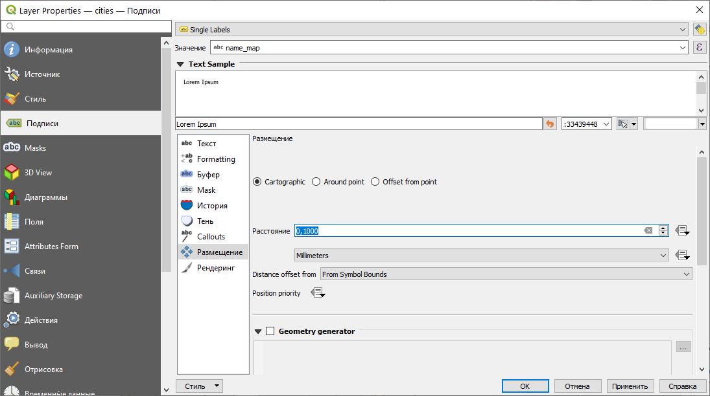
Примените изменения и закройте окно свойств слоя.
Результат будет выглядеть приблизительно так, как показано на рисунке ниже. Заметьте, что QGIS отрисовывает не все подписи, доступные в таблице атрибутов — например, с высокой вероятностью не показывается подпись Москвы. Опции размещения подписей можно настраивать более детально, но это не входит в задачи этого упражнения.

Снимок экрана №4. Окно QGIS после добавления подписей
4.7 Настройка условных знаков географической основы
Мы задали оформление слоям, отвечающим за тематическую нагрузку создаваемой карты. Теперь нам необходимо задать символику для всех остальных слоёв и расположить их в правильном порядке.
Переименуйте оставшиеся слои:
- boundaries: государственные границы
- coastline: береговая линия
- lakes: озёра
- neighbouring_countries: соседние страны
Расположите слои в следующем порядке:
- Людность городов
- береговая линия
- государственные границы
- озёра
- Плотность населения
- соседние страны
Задайте для слоя береговой линии символ simple blue line и толщину 0,36
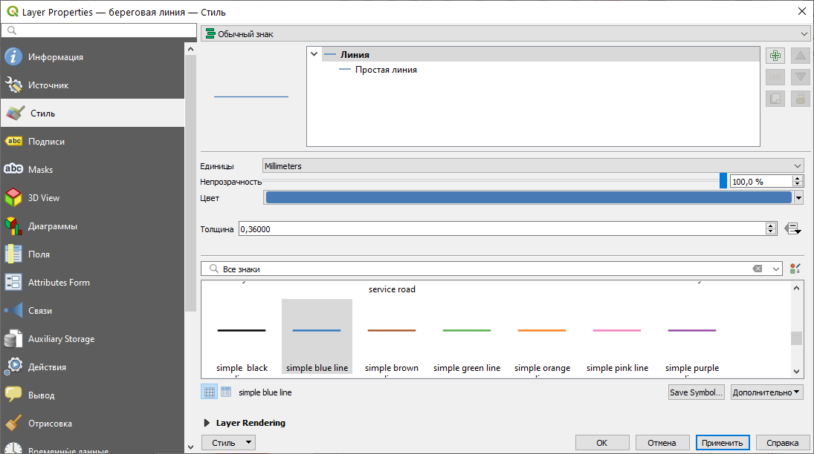
Задайте для слоя государственных границ символ Residental road
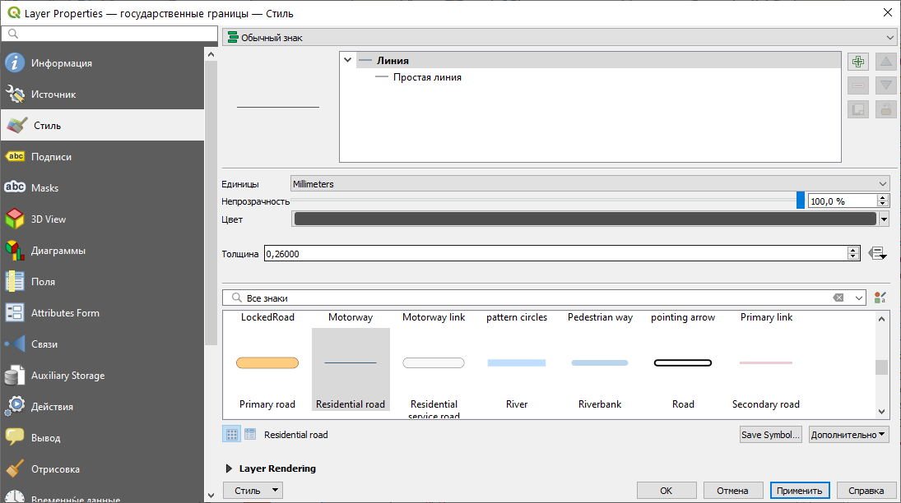
Задайте для слоя озёр символ topo water
Задайте для слоя соседних стран символ gray 2 fill
Результат обновления символики слоёв будет выглядеть приблизительно так:
4.8 Создание макета карты
Макет (Layout) в QGIS – это основной способ создания картографических изображений на основе визуализированных пространственных данных. Вы размещаете картографическое изображение на листе, добавляете зарамочное оформление (название, легенду, подпись масштаба и др.), и в заключение экспортируете результат в виде растровой или векторной графики.
Примечание: в одном проекте QGIS может быть создано несколько макетов, использующих разные наборы слоёв.
Измените охват картографического изображения в основном окне QGIS так, чтобы территория России умещалась в нём целиком.
Создайте новый макет компоновки. Для этого нажмите
Ctrl+P, воспользуйтесь пунктом меню Проект — Создать макет или кнопкой Создать макет на главной панели
Создать макет на главной панелиQGIS попросит вас ввести название макета. Никаких ограничений на название не накладывается, вы можете использовать любое имя. Например,
%Фамилия%_карта_РоссииКогда вы введёте название макета и нажмёте ОК, откроется новое окно — окно вёрстки макета:
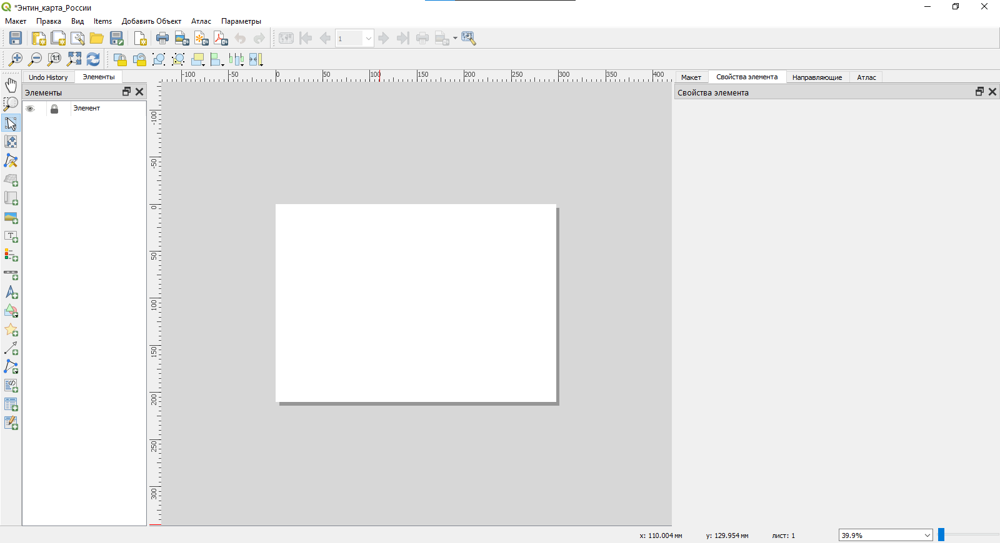
Белый прямоугольник, который вы видите в центре окна, обозначает страницу бумаги, на которой вы размещаете ваше изображение. Для добавления и редактирования элементов макета используется Панель инструментов (см. рисунок ниже). Она может быть размещена горизонтально или вертикально.
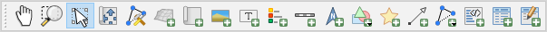
Добавьте картографическое изображение на макет. Нажмите кнопку Добавить Карта на Панели инструментов или выберите аналогичную опцию из меню Добавить объект. Затем установите курсор на то место страницы, где вы хотите поместить северо-западный (верхний левый) угол карты. Зажмите левую кнопку мыши и ведите курсор к месту, где должен располагаться юго-восточный (нижний правый) угол карты. Доведя курсор до этого места, отпустите левую кнопку мыши. Результат должен выглядеть приблизительно так, как показано на рисунке ниже:
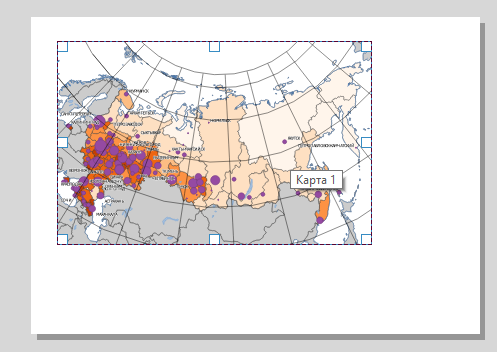
Обратите внимание, что размер картографического изображения меньше размера страницы. Это сделано специально: мы оставляем поля для печати. Несколько позже вы ещё немного уменьшите размер изображения, чтобы разместить на листе название карты, легенду, масштабную линейку и другую необходимую информацию.
Примечание: перевод QGIS на русский язык всё ещё оставляет желать лучшего. В некоторых случаях ошибки незначительны (как, например, с названием опции «Добавить Карта»), но иногда неправильный перевод может сбить с толку.
Следущие несколько шагов будут посвящены настройке сетки координат для карты. Чтобы начать настройку, найдите панель Свойства элемента, а в ней — вкладку Сетки

Разверните вкладку Сетки и нажмите на кнопку Добавить сетку. Обратите внимание, что к одному картографическому изображению можно добавить несколько сеток, присвоив им разные имена. Сейчас мы этого делать не будем, нам достаточно одной сетки географических координат.
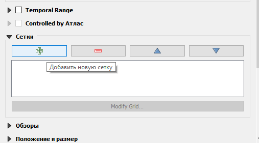
Нажмите на кнопку Modify Grid…, чтобы перейти к настройкам сетки
В открывшейся панели измените значения следующих параметров:
Внешний вид:
- Система координат: установите систему координат WGS 1984 (EPSG:4326)
- Интервал по X (долготе): 30
- Интервал по Y (широте): 15
- Стиль линии: используйте существующий стиль, но уменьшите толщину линии до 0,15 мм
Рамка:
- Вид рамки: Exterior ticks (внешние метки)
- Отображать слева и справа только широту (latitude only)
- Отображать сверху и снизу только метки долготы (longitude only)
Координаты:
- Включить опцию Draw Coordinates (Показывать координаты)
- Формат: Decimal with Suffix (десятичные дроби с меткой направления)
- Показывать слева и справа только подписи широты
- Показывать снизу и сверху только подписи долготы
- Точность координат: 0 (эта настройка отвечает за число знаков после запятой)
Вернитесь в «Свойства элемента» и найдите настройку «Фон» (англ. Background, неправиильно переведено как «история»). Измените фон картографического изображения на светло-голубой. Таким образом вы сымитируете цветной фон морей и океанов.
Результат будет выглядеть приблизительно так, как показано на рисунке ниже:
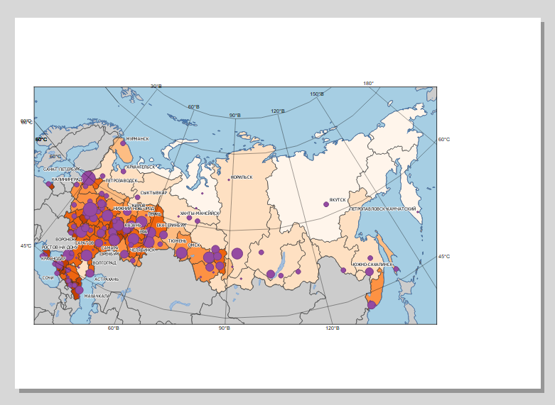
Добавьте легенду на макет. Нажмите кнопку Добавить Легенда, а затем щёлкните левой кнопкой мыши возле северо-восточного угла карты. Нажмите ОК в появившемся окне настройки размера элемента. После добавления легенды макет будет выглядеть примерно так, как показано на рисунке ниже:
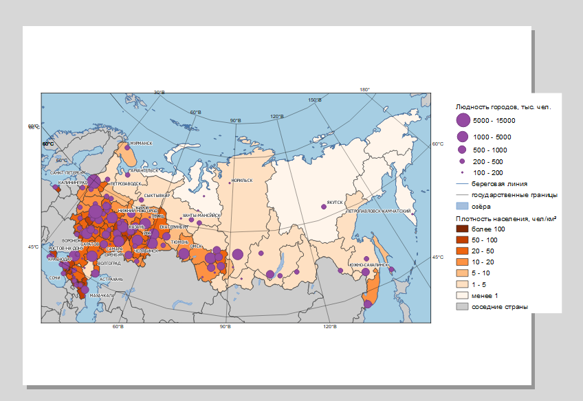
Выберите элемент легенды и перейдите в «Свойства элемента». Найдите пункт Элементы легенды (Legend Items). Этот пункт позволяет вам настраивать содержимое автоматически собираемой легенды.
Отключите опцию Auto Update. Выключая эту опцию, вы «разрываете связь» между основным окном QGIS и легендой. Теперь при любых изменениях в основной карте легенда не будет обновляться автоматически. С другой стороны, это даёт вам возможность редактировать содержимое легенды.
Удалите из легенды все элементы, кроме «Людность городов» и «Плотность населения».
Измените размер и положение элементов макета таким образом, чтобы и карта, и легенда помещались на листе и не перекрывали друг друга. Результат должен выглядеть приблизительно так, как показано на рисунке ниже:
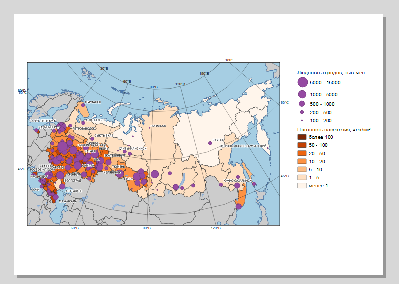
Добавьте масштабную линейку на макет. Нажмите кнопку Добавить Масштабная линейка или воспользуйтесь аналогичной опцией из меню Добавить Объект. Разместите его под основным картографическим изображением.
Измените подпись единиц измерения масштабной линейки: вместо варианта «km», который используется по умолчанию, впишите «км»
Вставьте текстовые блоки: название карты и информацию об авторстве карты.
Если необходимо, измените размеры или взаимное расположение элементов, чтобы все они умещались на листе и не «прилипали» к его краям. Результат должен выглядеть приблизительно так, как показано на рисунке ниже:
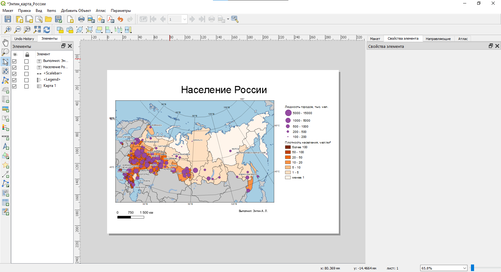
Экспортируйте изображение в графический файл формата PNG. Для этого используйте кнопку 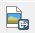 Экспорт в изображение или опцию меню Макет, имеющую такое же название. В настройках экспорта укажите целевое разрешение 300 точек на дюйм (dots per inch, dpi).